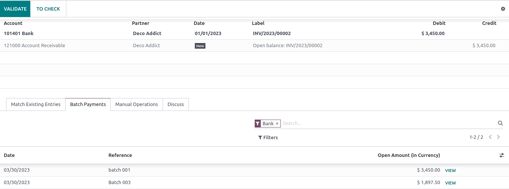

Pagos por lote para depósitos bancarios¶
Un depósito de lote es una manera conveniente de agrupar pagos que realicen los clientes y depositarlos en la cuenta bancaria. Esta función le permite enlistar varios pagos y generar un comprobante de depósito con una referencia al lote. Esta referencia se puede usar al momento de realizar la conciliación para emparejar las líneas del estado bancario con las transacciones en el depósito bancario.
Configuración¶
Vaya a y marque Pagos por lote para activar la función.
Depositar varios pagos en lote¶
Registrar pagos¶
Antes de realizar un depósito por lote, es necesario registrar el pago de cada transacción. Para hacerlo, abra la factura correspondiente y haga clic en Registrar pago. En la pestaña emergente, seleccione el Diario vinculado a su cuenta bancaria, elija Depósito por lote como método de pago y haga clic en Crear pago.

Agregar pagos a un depósito por lote¶
Para agregar pagos a un depósito por lote vaya a y haga clic en Nuevo. Después, seleccione el Banco y como Método de pago elija Depósito por lote.
Haga clic en Agregar una línea. En la ventana emergente, marque todos los pagos que se van a incluir en el depósito en lote, después haga clic en Seleccionar.
Ya que lo haya hecho, haga clic en Validar para finalizar el depósito por lotes.
Truco
Haga clic en Imprimir para descargar el archivo PDF para incluir el comprobante en depósito.
Conciliación bancaria¶
Una vez que las transacciones de su banco estén en su base de datos, puede conciliar las líneas del estado bancario con el pago por lotes. Para hacerlo, vaya al tablero de contabilidad y haga clic en Conciliar asientos dentro de la cuenta bancaria relacionada. Vaya a la pestaña Pagos por lote para seleccionar un lote específico y haga clic en Validar para finalizar el proceso.
Nota
Si el banco no pudo procesar o no se puede encontrar uno de los pagos, elimine el pago antes de realizar la conciliación.